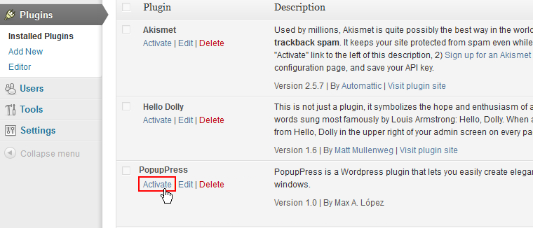
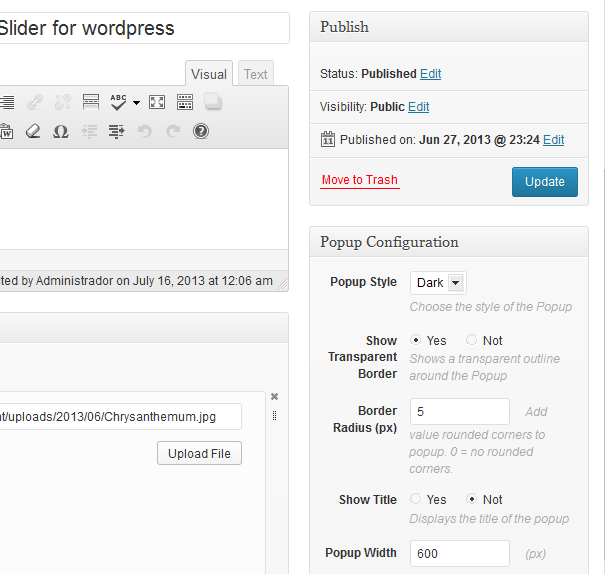
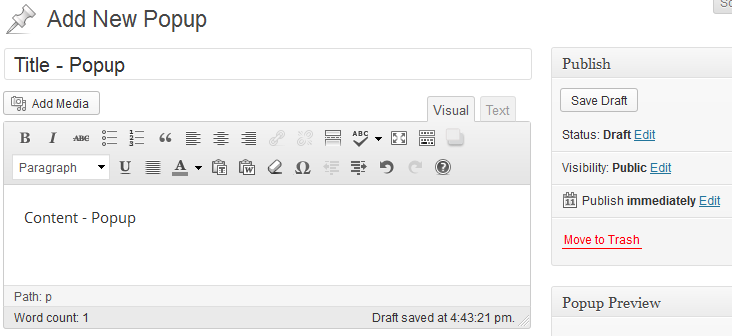
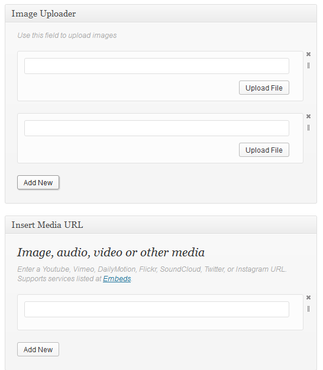
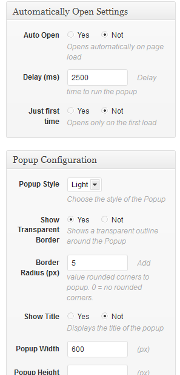
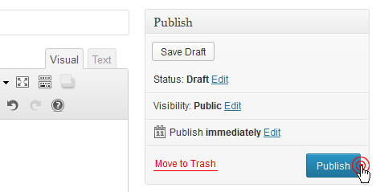
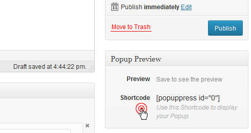
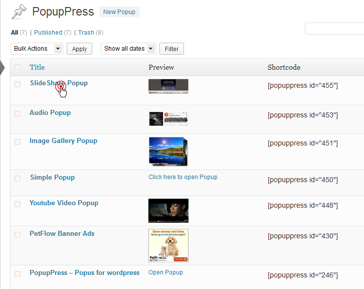

PopupPress - Wordpress Plugin
Easy & Elegant Popups for Wordpress
- Created: 17/07/2013
- Latest Update: 16/09/2013
- By: Max López
- Email: infowpmax@gmail.com
Thank you for your purchase of my article. If you have any questions that are beyond the scope of this help file, please do not hesitate to send a message to the e-mail address posted above. Thanks so much!
Description
PopupPress is a Wordpress plugin that lets you easily create elegant overlapping windows.
PopopPress lets show HTML Text, Images, Audio, Video, Pictures and Video Galleries, and many more media.
The can be used to display advertising banners, notices, work portfolio, product description, product images, or other information.
Hope you enjoy it!
Installation
Installation
1. Use the built-in WordPress plugin installer.
To use this method, first extract the .zip file downloaded from Code Canyon, then go to your WordPress Dashboard, click on Plugins, then click Add new. Next, click Upload and then click Choose File, navigate to where you downloaded and extracted the file from Code Canyon, and select popup-press.zip. Now click "Install Now".
2. Use FTP to upload the plugin
To use this method, first extract the .zip file downloaded from Code Canyon, then open your FTP application, navigate to where you extracted the file, and upload the "popup-press" folder to your wp-content/plugins directory. The plugin is now installed.
Activate
Now that the plugin is installed, go to your WordPress Dashboard, click on Plugins, find PopupPress and click "Activate".
You can now go to the plugin settings page to customize it to your liking in the drop-down menu of PopupPress.
Configuration page
The plugin configuration page is located in the drop-down menu of PopupPress
Using this panel, you can customize all the options of the plugin, in every field there is a description.

These are general settings, but you can change the values for each popup, from the posting page.

How to use
How to add a new Popup
To add a new popup, click on "hshs" located in "PopupPress" from the left navigation menu.

Then you can add your Title and Contents Popup
You can also add additional content using the plugin meta boxes
The next step is to configure your Popup.
And finally click on Publish!
How to display the created Popup
Every time you create a Popup, this generates a Shortcode to be used to insert where you want to show the popup. You can create a new post or page and add short code there.
How to edit a Popup
When you publish more than one Popup, they are listed, then you must click on the title to edit.
..............................
....................
...........
It’ll be a piece of cake!
Thank you!
Thank you for your purchase of my article. If you have any questions that are beyond the scope of this help file, please do not hesitate to send a message to the e-mail address posted above. Thanks so much!